RAPPORT DE STAGEstage au studio Los Patos
(2021)
éditionreliure copterisographie
Rendu sous forme éditoriale du rapport de stage. Livrets assemblés par une reliure copte. Ce stage professionnel a été effectué au studio Los Patos, en Espagne durant 10 semaines. Cette expérience a confirmé mon attirance envers les travaux éditoriaux, la conception d’identités visuelles et la typographie.
 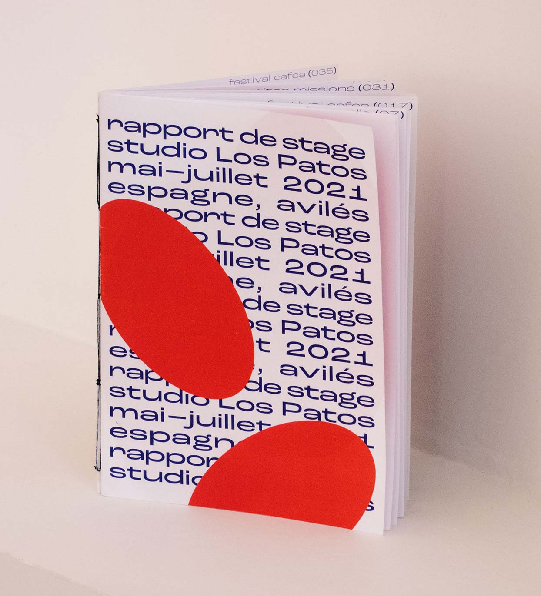
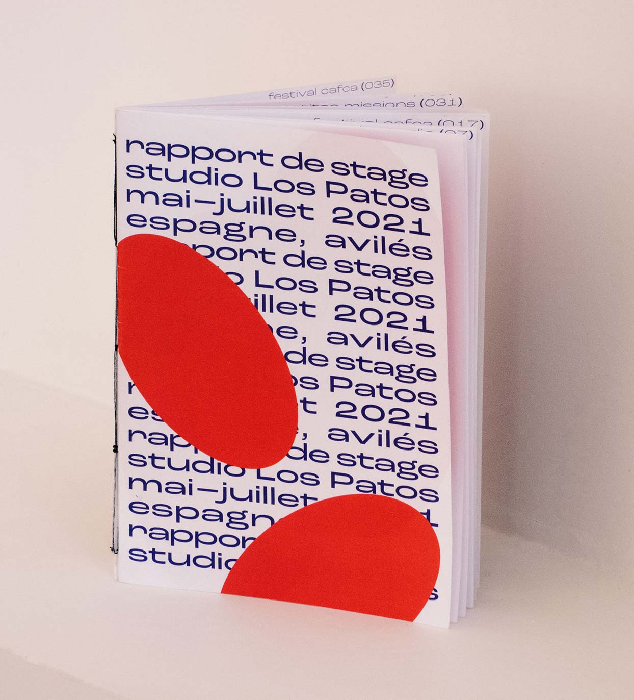
 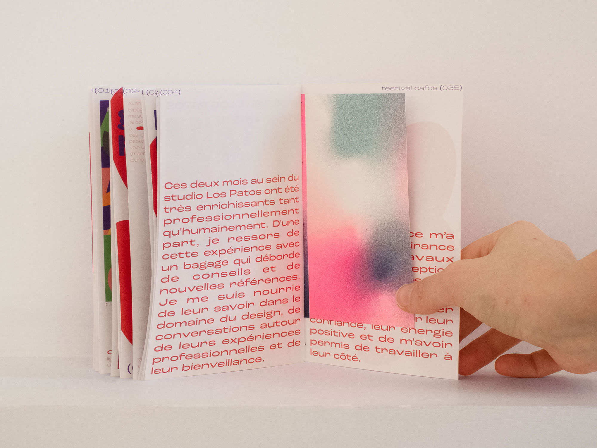
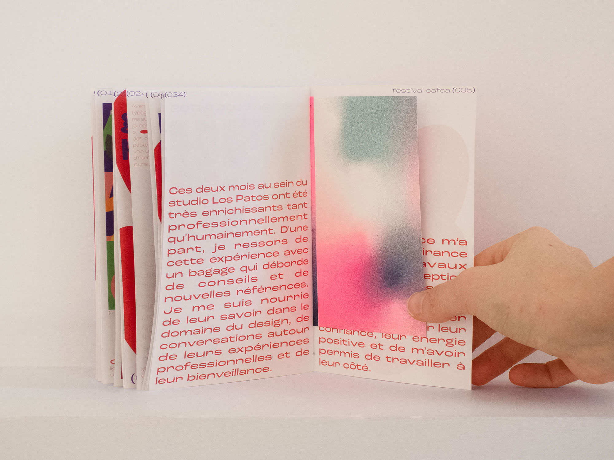
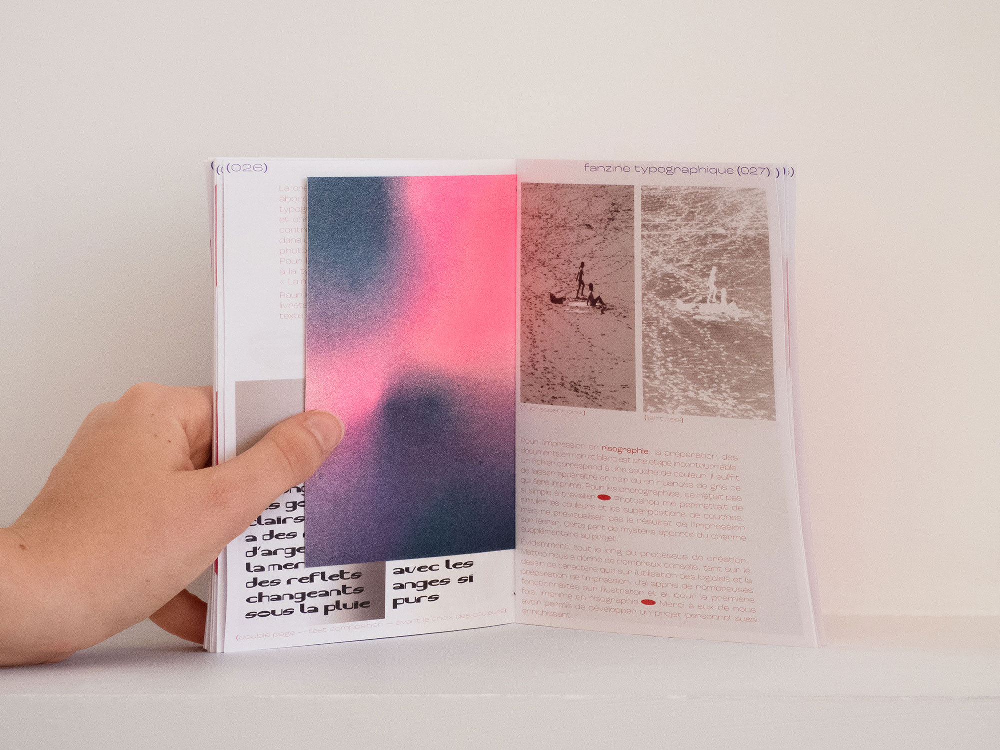
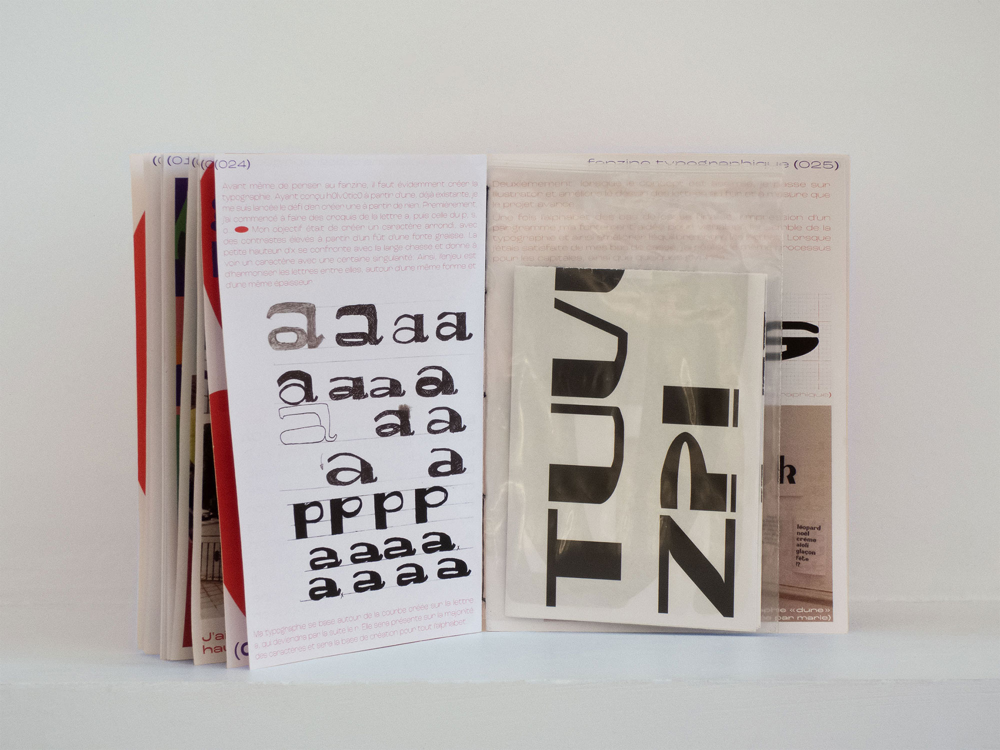
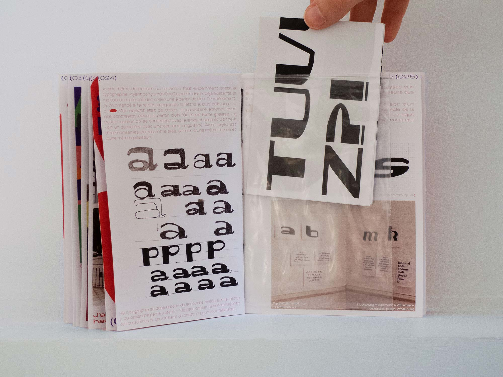
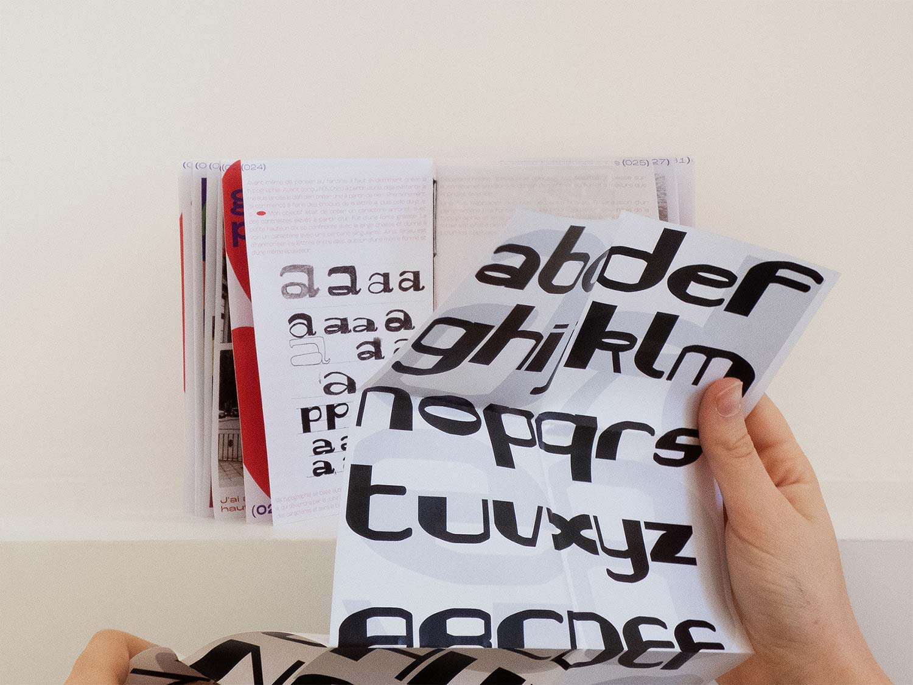
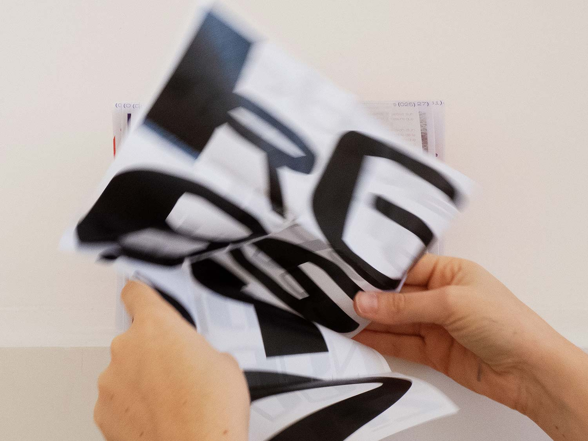
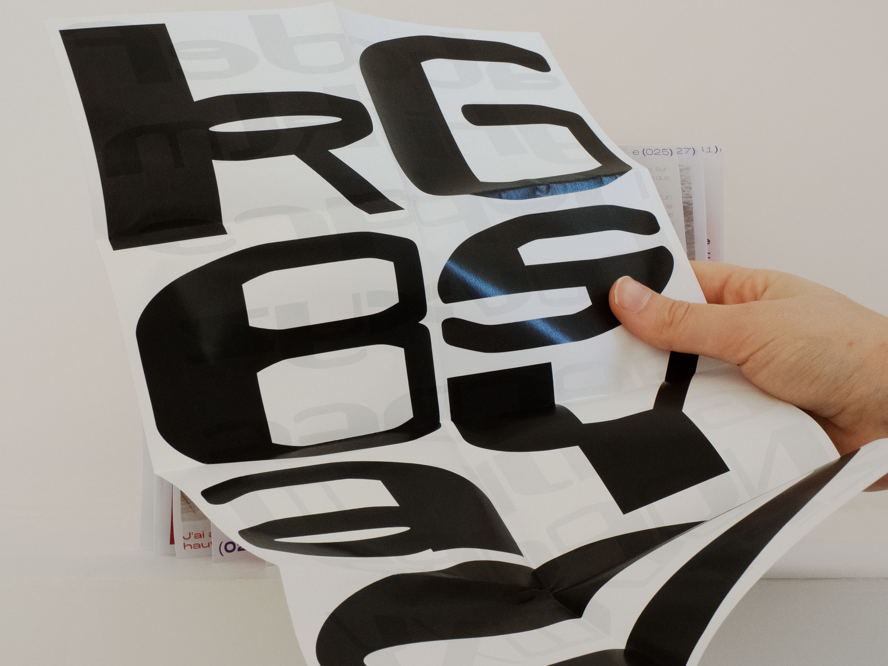
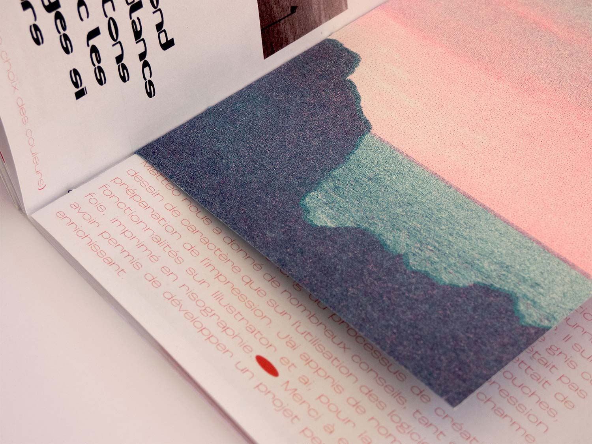
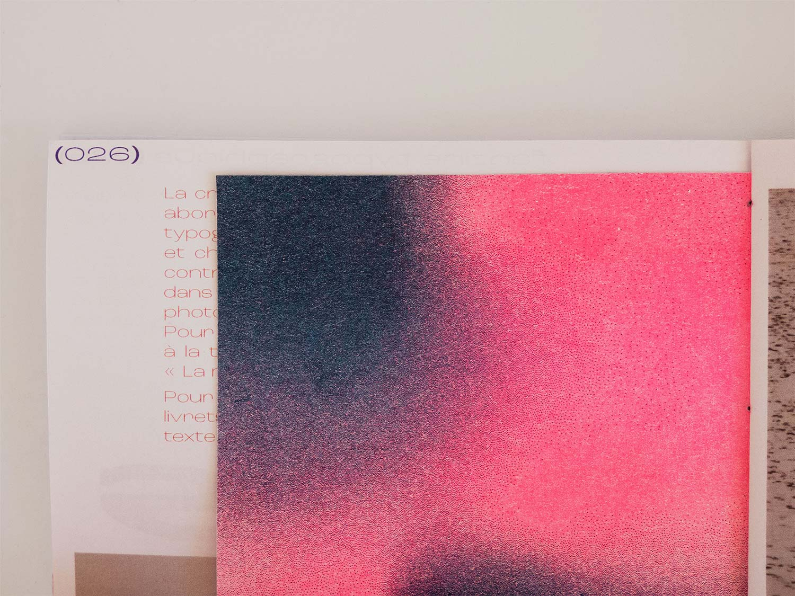
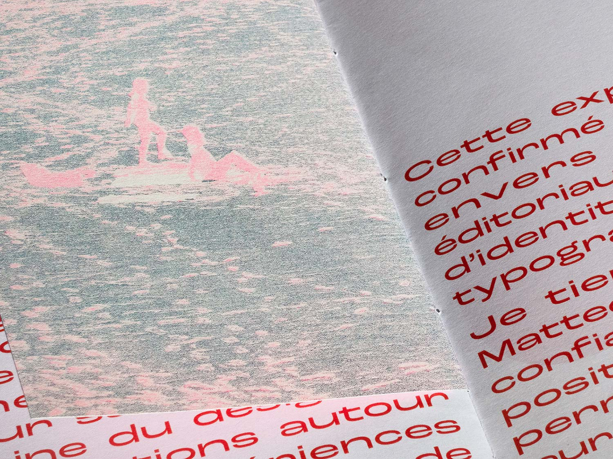